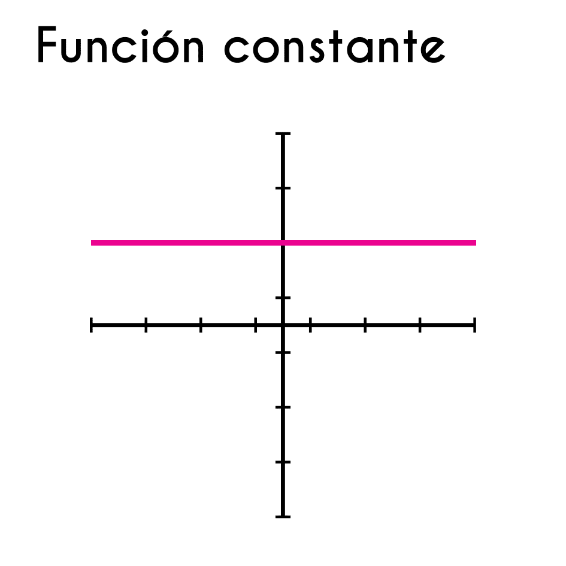

Glosario
1. Algoritmo:
• Conjunto de pasos ordenados y definidos para resolver un problema específico.
Ejemplo:Un algoritmo para ordenar una lista de números de menor a mayor.2. Variable:
• Espacio de memoria donde se almacena un dato que puede cambiar durante la ejecución de un algoritmo.
Ejemplo:En un programa de calculadora, la variable resultado puede contener diferentes valores a medida que el usuario realiza operaciones.3. Constante:
• Valor que permanece invariable durante la ejecución de un algoritmo.
Ejemplo:El valor de PI = 3.14159 en un programa para cálculos geométricos. 4. Condicional:
• Estructura de control que permite ejecutar ciertas instrucciones solo si se cumple una condición determinada.
Ejemplo:En un programa de temperatura, si la variable temperatura > 30, entonces muestra “Hace calor”.5. Bucle:
• Estructura de control que permite repetir una secuencia de instrucciones varias veces.
Ejemplo:Un bucle que recorra una lista de nombres y los imprima uno por uno.6. Función:
• Bloque de código que realiza una tarea específica y puede ser reutilizado en distintas partes del algoritmo.
Ejemplo:Una función sumar(a, b) que devuelve la suma de dos números.7. parámetro:
• Dato que se pasa a una función para que pueda trabajar con valores específicos.
Ejemplo:En la función sumar(a, b), a y b son parámetros.8. Recursividad:
• Técnica en la que una función se llama a sí misma para resolver un problema mediante subdivisión..
Ejemplo:Una función que calcula el factorial de un número llamándose a sí misma hasta llegar al caso base.9. Pseudo-codigo:
• Representación simplificada de un algoritmo que utiliza palabras clave en lugar de código específico.
Ejemplo:si el número es par, dividirlo por 2; si es impar, multiplicarlo por 3 y sumar 1".10. Diagrama de Flujo:
• Representación gráfica de los pasos de un algoritmo, mostrando el flujo de control y las decisiones.
Ejemplo:11. Eficiencia:
• Capacidad de un algoritmo para resolver un problema en el menor tiempo y con el menor uso de recursos posibles.
Ejemplo:El algoritmo de ordenamiento rápido (quicksort) es generalmente más eficiente que el ordenamiento burbuja (bubble sort).
12. Ordenamiento:
• Proceso de organizar una secuencia de datos en un orden determinado, como ascendente o descendente.
Ejemplo:El ordenamiento por selección que organiza una lista de números de menor a mayor.